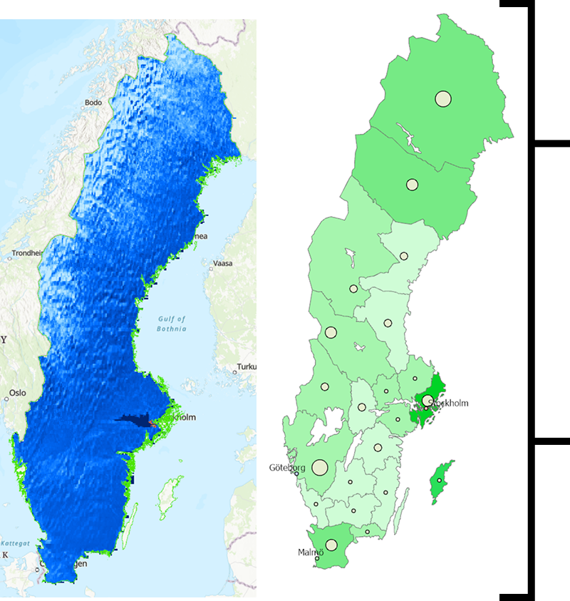
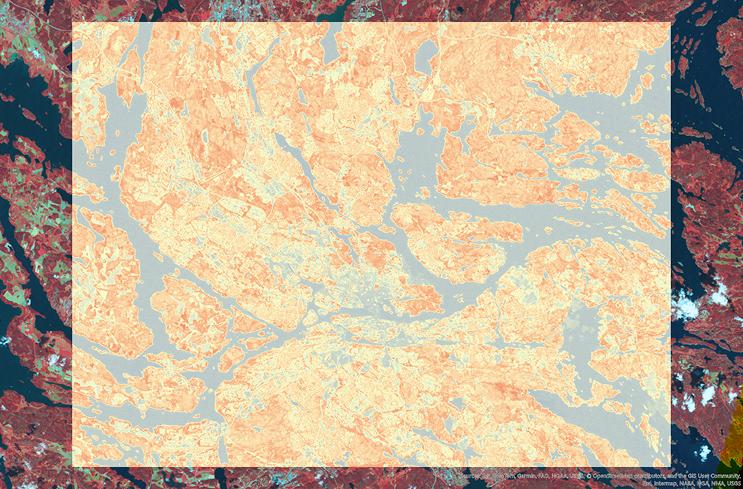
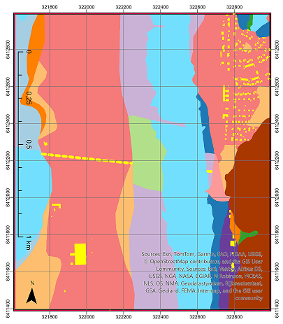

The Mapping
of
Sweden
Jan 2026 - May 2026
Study
The objective of this study was to look at Sweden in a different perspective, and to get a better perspective of the country.This project was part of a course I am currently taking with Stockholm University. I have been doing this course in order to get myself into the mindset of GIS and Urban Planning. The course has allowed me to view Sweden in many different perspectives, but also helped me understand the importance of GIS in urban planning.
Work
The technical framework of this project focused on high-resolution spatial analysis and data synthesis within a GIS environment. To evaluate the diverse landscapes of Sweden, I performed a series of analytical workflows using both vector and raster datasets. This involved transitioning from raw geographic information to actionable spatial insights by applying various geoprocessing tools. The work was centered on identifying the intersection between environmental constraints and urban development potential.

Elevation Map
This map mainly consits of the elevation of the country, and how it changes from the coast to the inland. This map was created using the DEM (Digital Elevation Model) data, and was created using the ArcGIS software. The DEM data was provided by the Swedish Mapping, Cadastre and Land Survey (MMLS) and was used to create the elevation map.
Nature Reserves Per Area
The map comapres the size of counties in Sweden and how many nature reserves they have in total. This was part of a excerise that introduced me to GIS and the ArcGIS software, which helped build the foundations for future maps. I learned to manage attribute tables and perform spatial joins to correlate environmental data with administrative boundaries. As well as calculating the ratio of protected land to total county area, I was able to visualize how regional conservation strategies differ across the country.

Plant Health Via Satellite Imagery
This method of research involved a map utilizing multiple satellite images which focused on the light spectrum. It involved using the near-infrared and green visible light, to tell the health of plant life. The process works by first separating the green spectrum of light, and comparing it to the near-infrared light. The reason for this is because plants absorb near-infrared light during the process of photosynthesis, but other parts of the environment also absorb near-infrared. That is why green light is used as an excluding factor, so only objects that are green, and absorb near-infrared can be observed. And thus the healthiness of a plant can be told by the amount of near-infrared it absorbs.

Soil Type
I was tasked in researching the types of soil in a specific town in Sweden, in order to check for areas that are at risk of soil erosion. This map was mainly a learning exercise in using multiple things, such as positioning old data maps onto existing maps, using lines and vector tools to highlight and differentiate areas, and to build a proper information map highlighting areas that can be understood and that can be referenced.
Outcome
Through this study, I gained a comprehensive understanding of Sweden's diverse landscapes by integrating multiple spatial analysis techniques and datasets. By examining elevation patterns, nature reserve distribution, plant health through satellite imagery, and soil erosion risks, was able to visualize how environmental constraints and development potential intersect across different regions. This multifaceted analysis deepened my appreciation for GIS as a critical tool in urban planning, demonstrating how spatial data can reveal patterns and inform sustainable decision-making at a regional scale.
The technical skills I developed—from managing attribute tables and performing spatial joins to analyzing spectral satellite data and vectorizing historical information—have equipped me with practical competencies in GIS analysis that are directly applicable to urban planning challenges.